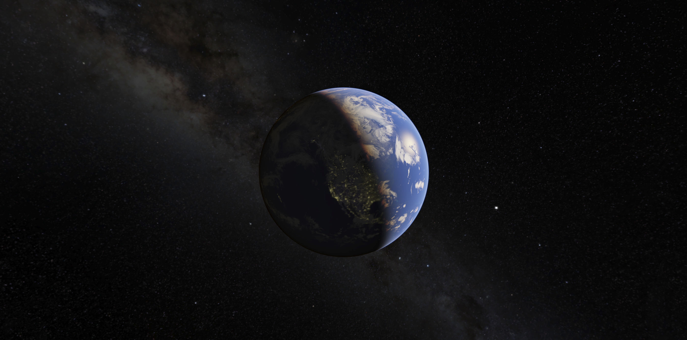
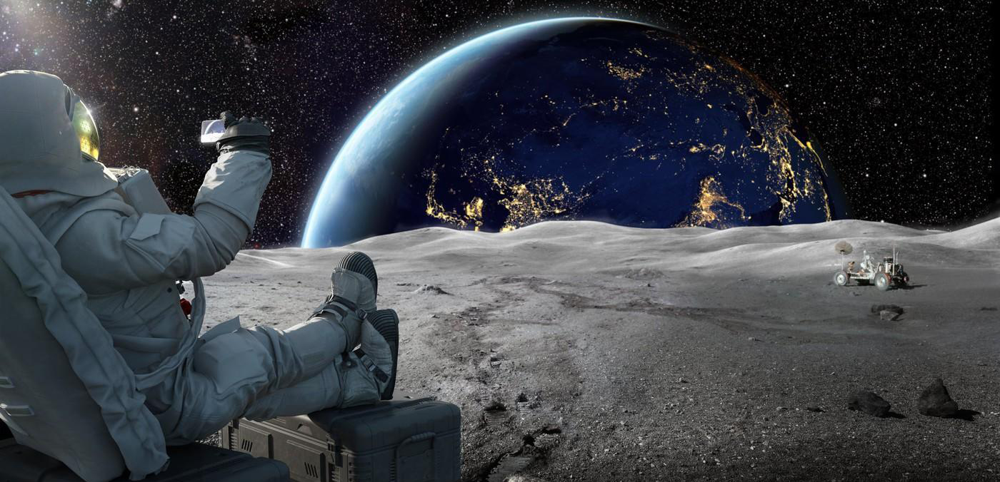

We find ourselves suspended in a vast cosmos. The dark overlay indicates where it is nighttime in the world.

Space Station Tracker
The tracker shows where the International Space Station is right now.
Latitude
Longitude
Time
Cosmos Soundscape
Click to listen to the scintillating sound from the universe.

FAQ
Why is the space station up there?
The space station is Earth's only microgravity laboratory. This football field-sized platform hosts a plethora of science and technology experiments that are continuously being conducted by crew members, or are automated. Research aboard the orbiting
laboratory holds benefits for life back on Earth, as well as for future space exploration. The space station serves as a testbed for technologies and allows us to study the impacts of long-term spaceflight to humans, supporting NASA's mission
to push human presence farther into space.
How often can I expect to see the space station?
The ISS is visible because it reflects the light of the Sun - the same reason we can see the Moon. However, unlike the Moon, the space station isn't bright enough to see during the day. It can only be seen when it is dawn or dusk at your location.
As such, it can range from one sighting opportunity a month to several a week, since it has to be both dark where you are, and the space station has to happen to be going overhead.
How fast is the space station travelling?
The ISS circles the Earth every 90 minutes. It travels at about 17,500 miles (28,000 km) per hour, which gives the crew 16 sunrises and sunsets every day. In the more than 15 years that people have been living onboard, the Station has circumnavigated
the Earth tens of thousands of times.
Does the station appear and then disappear because of the light of the Moon?
The space station is visible because it is reflecting light from the Sun. This is the same reason that the Moon appears to shine. Even when the Moon hasn't risen, you'll still be able to see the space station.